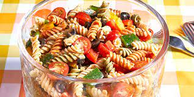
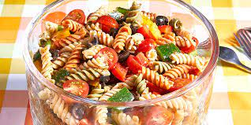

Our Menu
Falafel
Chickpeas, herbs & spices.

Pasts Salad
Lettuce, vegetables & mozzarella
Prices
| Falafel | $12.00 |
| Pasta Salad | $10 |
Chickpeas, herbs & spices.
Lettuce, vegetables & mozzarella
| Falafel | $12.00 |
| Pasta Salad | $10 |